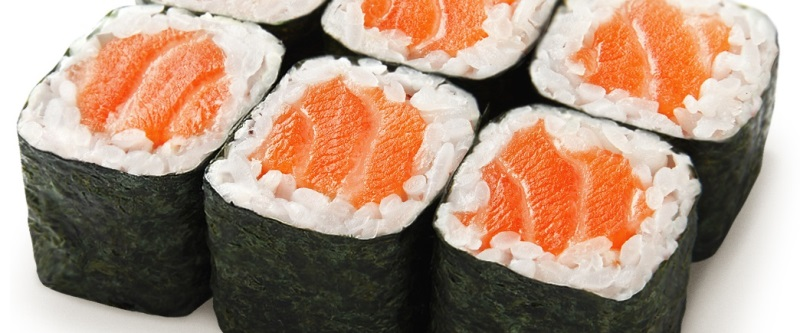

приготовление:
-
Заранее засолить 500 г красной рыбы: равномерно натереть её 1 ст. л. крупной морской соли и оставить в холодильнике на 1–2 дня.
-
200 г риса для суши тщательно промыть, удалить всплывшие зёрна и переложить в кастрюлю с толстым дном. Влить 250 мл воды, накрыть крышкой и довести до кипения на среднем огне. Убавить огонь до минимального и варить 10–15 минут, пока вода полностью не впитается. Снять кастрюлю с огня и, не открывая крышку, оставить рис ещё на 10–15 минут.
-
Смешать 2 ст. л. рисового уксуса, 1 ч. л. сахара и 1 ч. л. соли. Слегка нагреть, помешивая, до полного растворения сахара и соли. Полить готовой заправкой рис и аккуратно перемешать деревянной ложкой.
-
Положить лист нори на бамбуковый коврик или фольгу. Смоченными водой руками распределить рис тонким слоем, оставив с одного края около 2 см свободного нори. С противоположной стороны выложить кусочки красной рыбы и сыр филадельфия.
-
Плотно свернуть ролл по направлению к свободному краю. Смочить этот край водой и закрепить, чтобы ролл не раскручивался. Нарезать смоченным водой острым ножом. Подавать с кисло-сладким и соевым соусами.